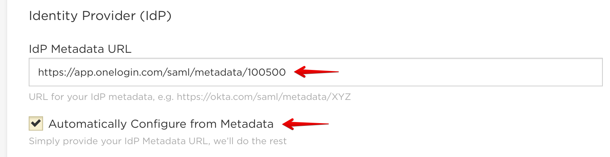
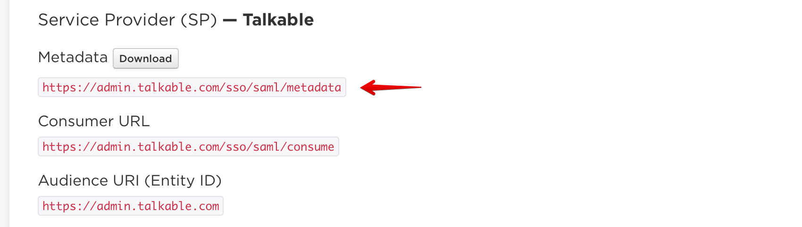

Single Sign-On (SSO)¶
Introduction¶
Security Assertion Markup Language (SAML) is the standard for secure single sign-on (SSO), and is the basis of SSO products from Okta, OneLogin, Active Directory, and more. Talkable fully supports the SAML v2.0 standard, making it easy to add a layer of security and convenience to your Talkable program.
There are two ways to set up SAML Single Sign-On: Automatic configuration, and manual configuration. We strongly recommend automatic configuration, if it is supported by your identity provider.
Here is some basic terminology to help you in this guide:
| Parameter | Description |
|---|---|
| Identity Provider (IdP) | The software/service that verifies the identity of your users. For example, Okta, OneLogin, Active Directory, etc. |
| Service Provider (SP) | Talkable. |
| Metadata URL | URL for the provider’s metadata. Both the IdP and the SP should have a Metadata URL. |
| Issuer (Entity ID) | A unique string that identifies the provider issuing a SAML request. According to the SAML specification, the string should be a URL, though not all providers respect this. Not required by all providers. |
| Consumer URL | The Talkable (SP) URL that will receive SAML requests from your IdP. |
| IdP SSO Target URL | The IdP URL that will receive SAML requests from Talkable (the SP). |
Automatic Configuration¶
Automatic configuration via metadata exchange is by far the easiest way to set up SAML SSO. Simply check the box for “Automatically Configure from Metadata” and provide the Metadata URL for your IdP.
Leave all other fields blank, and save the settings.
Your IdP may require Talkable’s metadata URL. You can copy Talkable’s (SP) metadata URL by clicking on the metadata link:
If automatic configuration is not supported by your IdP, then try manual configuration.
Manual Configuration¶
Uncheck the box for “Automatically Configure from Metadata”.
Fill in the following fields:
- IdP Issuer (Entity ID)
- IdP SSO Target URL
- X.509 Certificate OR Certificate Fingerprint (Talkable will automatically generate the fingerprint if the full X.509 certificate is provided)
Save the settings.
Testing Single Sign-On¶
Once you’ve configured SSO, you can test it as followed:
IdP-initiated SSO
- Log out of Talkable
- Log in to your IdP (e.g. Okta, OneLogin, etc.)
- Click on the Talkable app in your app panel
SP-initiated SSO
Log out of Talkable
Visit the SP-Initiated SSO URL (provided on the SSO configuration page in Talkable)